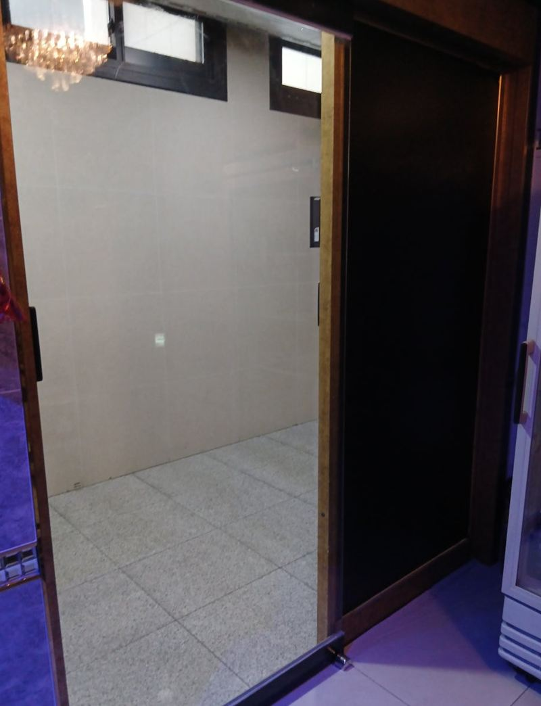
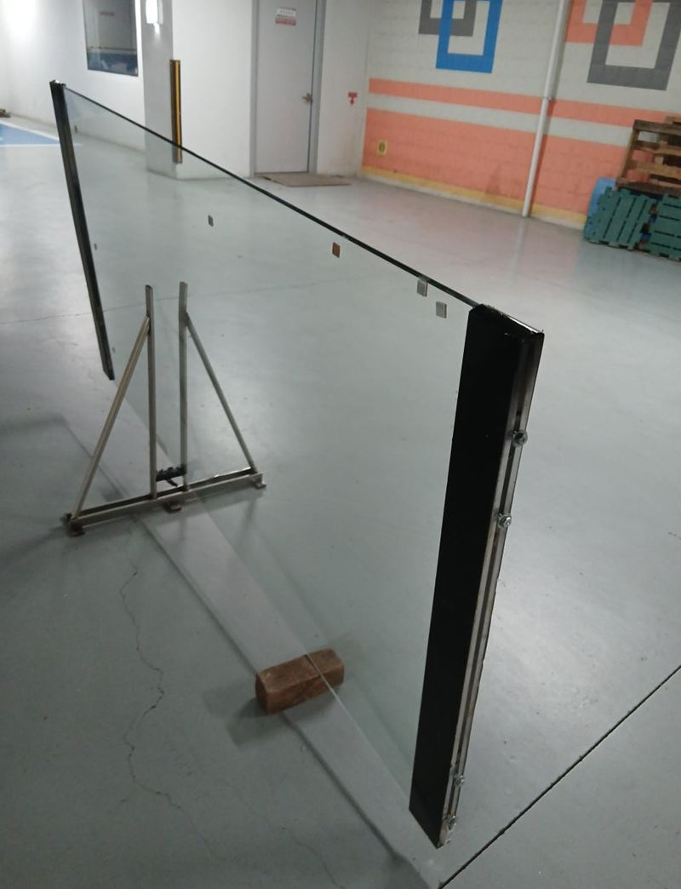
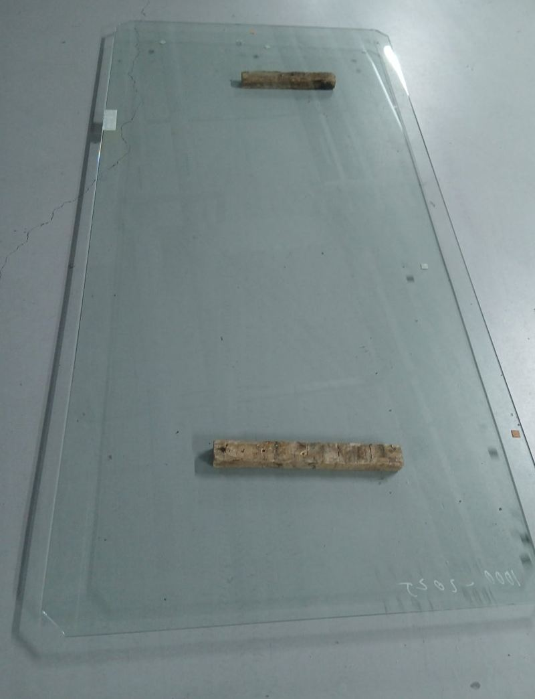
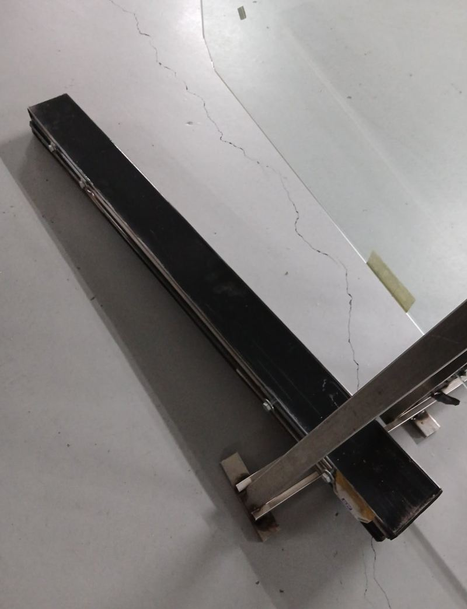
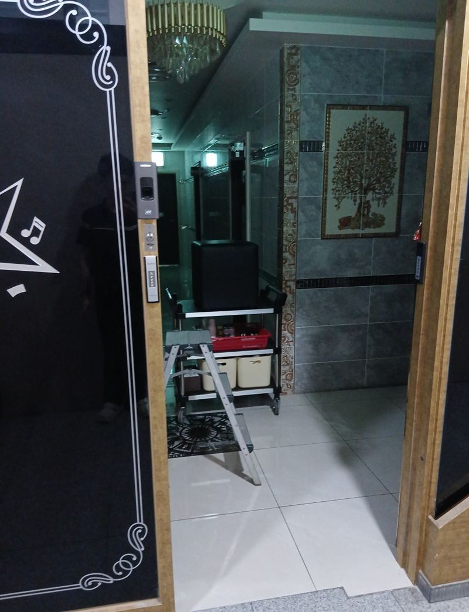
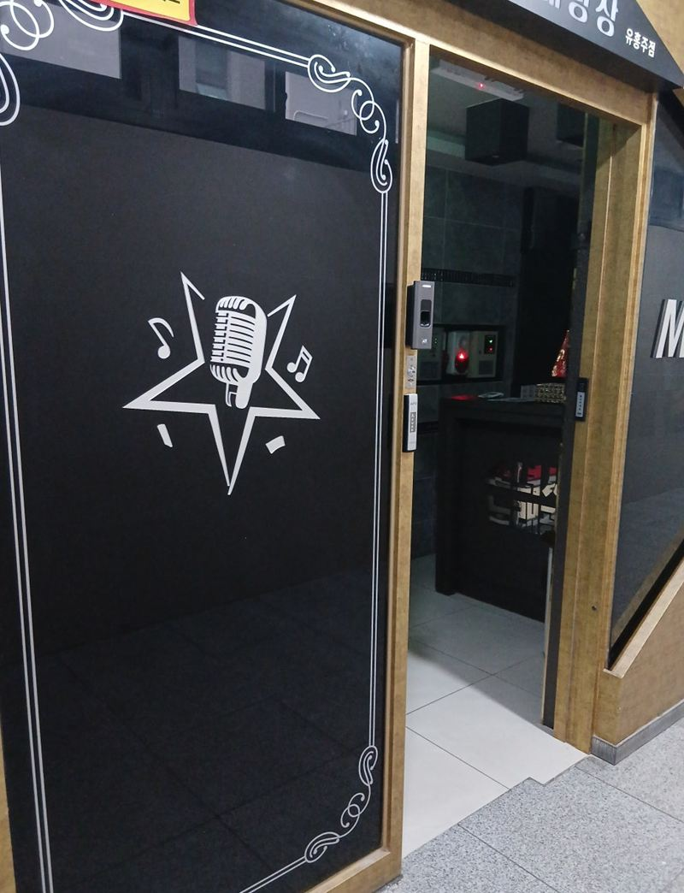
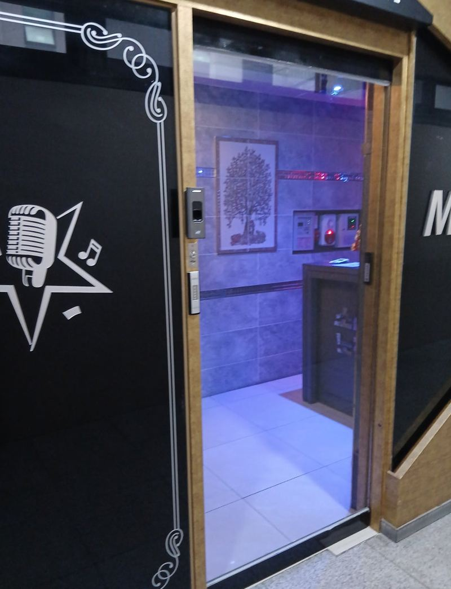

평택 강화유리 슬라이딩 자동문 유리 교체 방법

 교체 전교체 후
교체 전교체 후← 밀어서 전후 비교 →
"출입문 유리가 깨져서 지금 문을 못 닫고 활짝 열어 놨어요. 손님 받는 중이라 위험한데, 빨리 될까요?" 평택 고덕동 상가 노래방 사장님의 급한 연락이었어요. 출입구 슬라이딩 자동문의 강화유리가 깨져, 손님이 드나드는 문이 비어 있었어요. 자동문 틀과 레일은 살리고, 실측해 바로 제작한 강화유리를 프레임에 맞춰 끼운 뒤 모터와 센서까지 확인했어요.
| 현장 | 평택 고덕동 상가 1층 노래방 출입구 |
|---|---|
| 증상 | 슬라이딩 자동문 강화유리 파손, 문 개방 상태로 영업 |
| 한 일 | 파손 상태 확인·실측 → 유리 제작 의뢰·수령 → 잔여 유리 철거 → 프레임·가이드 레일에 장착 → 실리콘 마감 → 모터·센서 작동 확인 |
| 살린 것 | 자동문 프레임, 레일, 모터·센서 |
유리만 바꾸면 되는 경우
자동문이 깨졌다고 자동문 전체를 바꿀 필요는 없어요. 틀과 레일, 모터가 멀쩡하면 유리만 새로 맞춰 끼우면 돼요. 다만 자동문 유리는 프레임 구조와 레일에 정확히 맞아야 움직이기 때문에, 치수가 조금만 달라도 문이 걸리거나 열리다 멈춰요. 그래서 실측을 꼼꼼히 하고 바로 유리 공장에 제작을 맡긴 뒤 직접 받아 왔어요.


자동문 유리 교체 순서
잔여 유리 철거
강화유리는 깨지면 작은 알갱이로 부서지지만, 틀에 남은 조각은 날카로워요. 보호 장비를 끼고 프레임에 남은 파편을 조심히 걷었어요.
프레임 정리
유리를 물리는 프레임 부속을 풀어 새 유리가 들어갈 자리를 정리했어요.

유리 장착
새 유리를 프레임과 가이드 레일에 맞춰 세우고, 고정 볼트와 전용 브라켓으로 아래쪽 틈 없이 물렸어요. 수평·수직이 맞아야 문이 기울지 않아요.


실리콘 보강
유리와 프레임 사이를 실리콘으로 채웠어요. 하루에도 수십 번 열리고 닫히는 문이라 진동에 흔들리지 않게 보강했어요.
교체 후 자동문 점검
- 닫히는 속도너무 빠르거나 느리지 않은지 봐요.
- 걸림끝까지 열리고 닫히는 동안 덜컹이는 곳이 없는지 확인해요.
- 센서 범위사람이 다가갈 때 제때 열리는지 확인해요.
- 소음유리와 프레임 밀착이 약하면 움직일 때 잡소리가 나요.

마지막으로 주변 파편과 유리 가루를 치웠어요. 사장님은 "깨진 티가 전혀 안 나고 새로 단 것처럼 깔끔하다"며 만족하셨어요.
자동문 유리 교체 때 알아 둘 것
| 항목 | 내용 |
|---|---|
| 유리 규격 | 기존 두께·크기에 맞춰 새로 제작 |
| 프레임 상태 | 휘었으면 프레임 보수가 먼저 |
| 모터 호환 | 무게가 크게 달라지면 작동에 영향 |
| 점검 주기 | 레일·프레임 변형은 1~2년에 한 번 살펴보기 |
유리 깨졌을 때 바로 할 일
- 주변 막기깨진 문 근처로 손님이 지나가지 않게 막아 두세요.
- 큰 조각 치우기장갑을 끼고 바닥에 떨어진 조각부터 치워 주세요. 틀에 남은 조각은 건드리지 마세요.
- 사진 남기기보험이나 원인 확인을 위해 깨진 상태를 찍어 두세요.
자동문 유리 교체 질문
깨진 채로 영업해도 되나요?
남은 파편에 다칠 수 있어요. 교체 전까지는 문 주변을 막아 두세요.
일반 유리로 바꾸면 안 되나요?
출입문은 강화유리를 써야 안전해요. 일반 유리는 깨질 때 큰 조각이 떨어져 위험해요.
유리에 붙어 있던 시트지는요?
새 유리에는 시트를 다시 붙여야 해요. 간판·시트 업체와 일정을 맞추시면 돼요.
수동문 유리도 교체하나요?
수동 강화유리문도 같은 방식으로 유리만 바꿀 수 있어요.
자동문 모터가 고장 났을 땐요?
모터·센서 상태를 보고 수리할지, 수동문으로 바꿀지 함께 비교해요.
야간에도 작업하나요?
영업 일정에 맞춰 상의해요. 유리 제작 시간이 필요해요.
보험 처리용 사진이 필요해요.
파손 상태 사진은 작업 전에 직접 찍어 두시면 좋아요.
다른 유리문·자동문 현장
깨진 문 전체와 프레임, 위쪽 레일 사진을 보내 주세요.
전화 상담 010-4517-9872